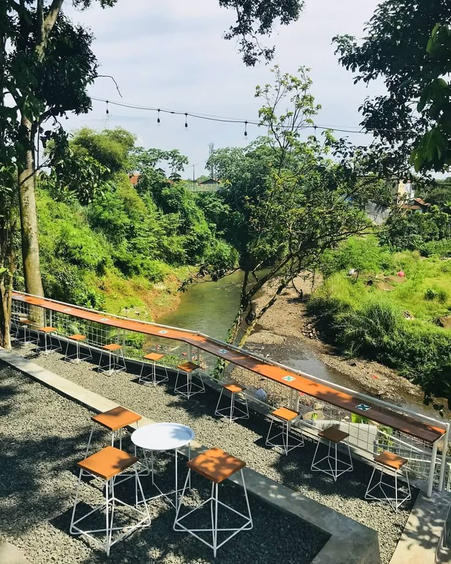

TENTANG KAMI
Cerita di Balik Pojok Kali
Pojok Kali berdiri dengan sederhana, dari kecintaan kami pada kopi dan keinginan membuat tempat yang menenangkan.
Terinspirasi dari aliran kali yang membawa ketenangan, kami ingin setiap cangkir kopi yang kami sajikan bisa menjadi teman istirahatmu sejenak dari hiruk pikuk dunia.

Duduk santai, dengar gemericik kali
01
Visi
Menjadi warkop lokal pilihan utama yang menghadirkan kopi berkualitas dan suasana penuh ketenteraman.
02
Misi
- Menyajikan kopi berkualitas
- Memberi pelayanan terbaik
- Menciptakan tempat nyaman untuk semua
03
Nilai Kami
Kualitas, Kejujuran, Kenyamanan, Kebersamaan, Kepedulian.